tibble [344 × 8] (S3: tbl_df/tbl/data.frame)
$ species : Factor w/ 3 levels "Adelie","Chinstrap",..: 1 1 1 1 1 1 1 1 1 1 ...
$ island : Factor w/ 3 levels "Biscoe","Dream",..: 3 3 3 3 3 3 3 3 3 3 ...
$ bill_length_mm : num [1:344] 39.1 39.5 40.3 NA 36.7 39.3 38.9 39.2 34.1 42 ...
$ bill_depth_mm : num [1:344] 18.7 17.4 18 NA 19.3 20.6 17.8 19.6 18.1 20.2 ...
$ flipper_length_mm: int [1:344] 181 186 195 NA 193 190 181 195 193 190 ...
$ body_mass_g : int [1:344] 3750 3800 3250 NA 3450 3650 3625 4675 3475 4250 ...
$ sex : Factor w/ 2 levels "female","male": 2 1 1 NA 1 2 1 2 NA NA ...
$ year : int [1:344] 2007 2007 2007 2007 2007 2007 2007 2007 2007 2007 ...10 Model Interpretation
Przemysław Biecek ![]()
Abstract
The goal of this chapter is to present key methods that allow in-depth posthoc analysis of an already trained model. The methods presented are model-agnostic, i.e. they can be applied to models of different classes. When using predictive models in practice, it is often the case that high performance on a validation set is not enough. Users more and more often want to know which variables are important and how they influence the model’s predictions. For the end user, such knowledge allows better utilisation of models in the decision-making process, e.g. by analysing different possible decision options. In addition, if the model’s behaviour turns out to be in line with the domain knowledge or the user’s intuition then the user’s confidence in the prediction will increase. For the modeller, an in-depth analysis of the model allows undesirable model behaviour to be detected and corrected.
Predictive models have numerous applications in virtually every area of life. The increasing availability of data and frameworks to create models has allowed the widespread adoption of these solutions. However, this does not always go together with enough testing of the models and the consequences of incorrect predictions can be severe. The bestseller book ,,Weapons of Math Destruction’’ (O’Neil 2016) discusses examples of deployed black-boxes that have led to wrong-headed decisions, sometimes on a massive scale. So what can we do to make our models more thoroughly tested? The answer is methods that allow deeper interpretation of predictive models. In this chapter, we will provide illustrations of how to perform the most popular of these methods (Holzinger et al. 2022).
In principle, all generic frameworks for model interpretation apply to the models fitted with mlr3 by just extracting the fitted models from the Learner objects.
However, two of the most popular frameworks additionally come with some convenience for mlr3, these are
-
imlpresented in Section 10.2, and -
DALEXpresented in Section 10.3.
Both these packages offer similar functionality, but they differ in design choices. iml is based on the R6 class system and for this reason working with it is more similar in style to working with the mlr3 package. DALEX is based on the S3 class system and is mainly focused on the ability to compare multiple different models on the same graph for comparison and on the explainable model analysis process.
10.1 Penguin Task
To understand what model interpretation packages can offer, we start with a thorough example. The goal of this example is to figure out the species of penguins given a set of features. The palmerpenguins::penguins (Horst, Hill, and Gorman 2020) data set will be used which is an alternative to the iris data set. The penguins data sets contain 8 variables of 344 penguins:
To get started run:
penguins = na.omit(penguins) is to omit the 11 cases with missing values. If not omitted, there will be an error when running the learner from the data points that have N/A for some features.
learner = lrn("classif.ranger")
learner$predict_type = "prob"
learner$train(task_peng)
learner$modelRanger result
Call:
ranger::ranger(dependent.variable.name = task$target_names, data = task$data(), probability = self$predict_type == "prob", case.weights = task$weights$weight, num.threads = 1L)
Type: Probability estimation
Number of trees: 500
Sample size: 333
Number of independent variables: 7
Mtry: 2
Target node size: 10
Variable importance mode: none
Splitrule: gini
OOB prediction error (Brier s.): 0.01790106 As explained in Section Learners, specific learners can be queried with mlr_learners. In Section Train/Predict it is recommended for some classifiers to use the predict_type as prob instead of directly predicting a label. This is what is done in this example. penguins[which(names(penguins) != "species")] is the data of all the features and y will be the penguinsspecies. learner$train(task_peng) trains the model and learner$model stores the model from the training command. Predictor holds the machine learning model and the data. All interpretation methods in iml need the machine learning model and the data to be wrapped in the Predictor object.
10.2 iml
Author: Shawn Storm
iml is an R package that interprets the behaviour and explains predictions of machine learning models. The functions provided in the iml package are model-agnostic which gives the flexibility to use any machine learning model.
This chapter provides examples of how to use iml with mlr3. For more information refer to the IML github and the IML book
Next is the core functionality of iml. In this example, three separate interpretation methods will be used: FeatureEffects, FeatureImp and Shapley
FeatureEffectscomputes the effects for all given features on the model prediction. Different methods are implemented: Accumulated Local Effect (ALE) plots, Partial Dependence Plots (PDPs) and Individual Conditional Expectation (ICE) curves.Shapleycomputes feature contributions for single predictions with the Shapley value – an approach from cooperative game theory (Shapley Value).FeatureImpcomputes the importance of features by calculating the increase in the model’s prediction error after permuting the feature (more here).
10.2.1 FeatureEffects
In addition to the commands above the following two need to be run:
library("iml")
model = Predictor$new(learner, data = x, y = penguins$species)
num_features = c("bill_length_mm", "bill_depth_mm", "flipper_length_mm", "body_mass_g", "year")
effect = FeatureEffects$new(model)
plot(effect, features = num_features)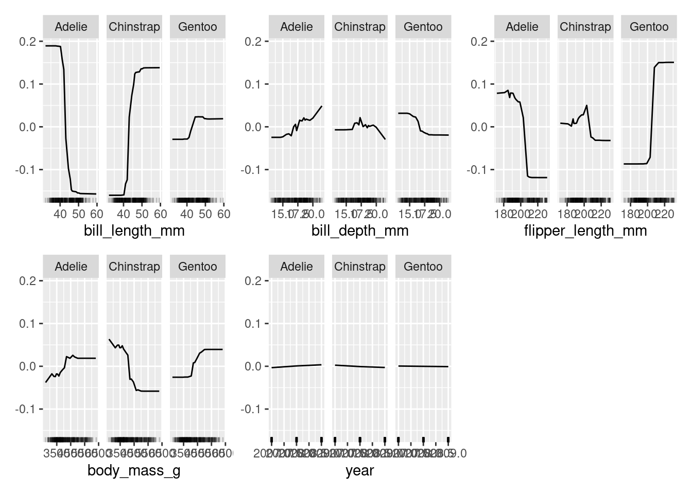
effect stores the object from the FeatureEffect computation and the results can then be plotted. In this example, all of the features provided by the penguins data set were used.
All features except for year provide meaningful interpretable information. It should be clear why year doesn’t provide anything of significance. bill_length_mm shows for example that when the bill length is smaller than roughly 40mm, there is a high chance that the penguin is an Adelie.
10.2.2 Shapley
x = penguins[which(names(penguins) != "species")]
model = Predictor$new(learner, data = penguins, y = "species")
x.interest = data.frame(penguins[1, ])
shapley = Shapley$new(model, x.interest = x.interest)
plot(shapley)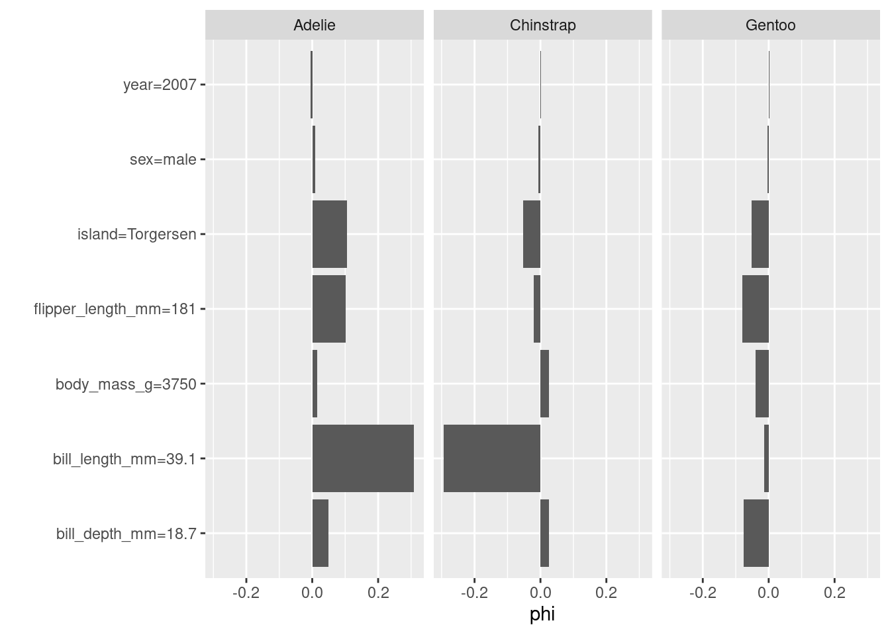
The \(\phi\) provides insight into the probability given the values on the vertical axis. For example, a penguin is less likely to be Gentoo if the bill_depth=18.7 is and much more likely to be Adelie than Chinstrap.
10.2.3 FeatureImp
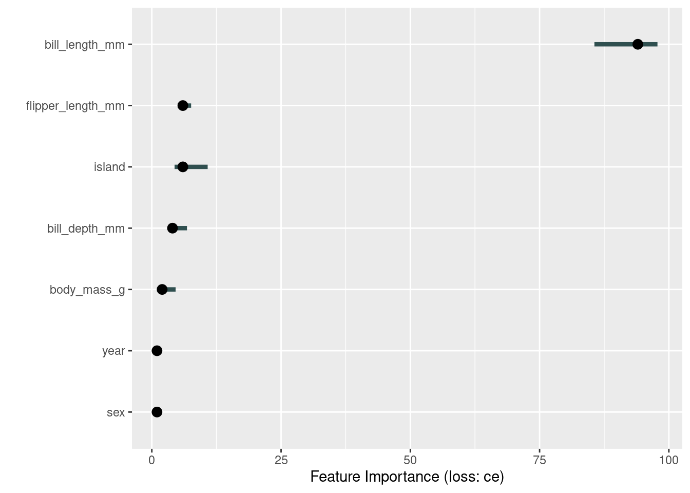
FeatureImp shows the level of importance of the features when classifying penguins. It is clear to see that the bill_length_mm is of high importance and one should concentrate on the different boundaries of this feature when attempting to classify the three species.
10.2.4 Independent Test Data
It is also interesting to see how well the model performs on a test data set. For this section, exactly as was recommended in Section Train/Predict, 80% of the penguin data set will be used for the training set and 20% for the test set:
First, we compare the feature importance on training and test set
# plot on training
model = Predictor$new(learner, data = penguins[train_set, ], y = "species")
effect = FeatureImp$new(model, loss = "ce")
plot_train = plot(effect, features = num_features)
# plot on test data
model = Predictor$new(learner, data = penguins[test_set, ], y = "species")
effect = FeatureImp$new(model, loss = "ce")
plot_test = plot(effect, features = num_features)
# combine into single plot
library("patchwork")
plot_train + plot_test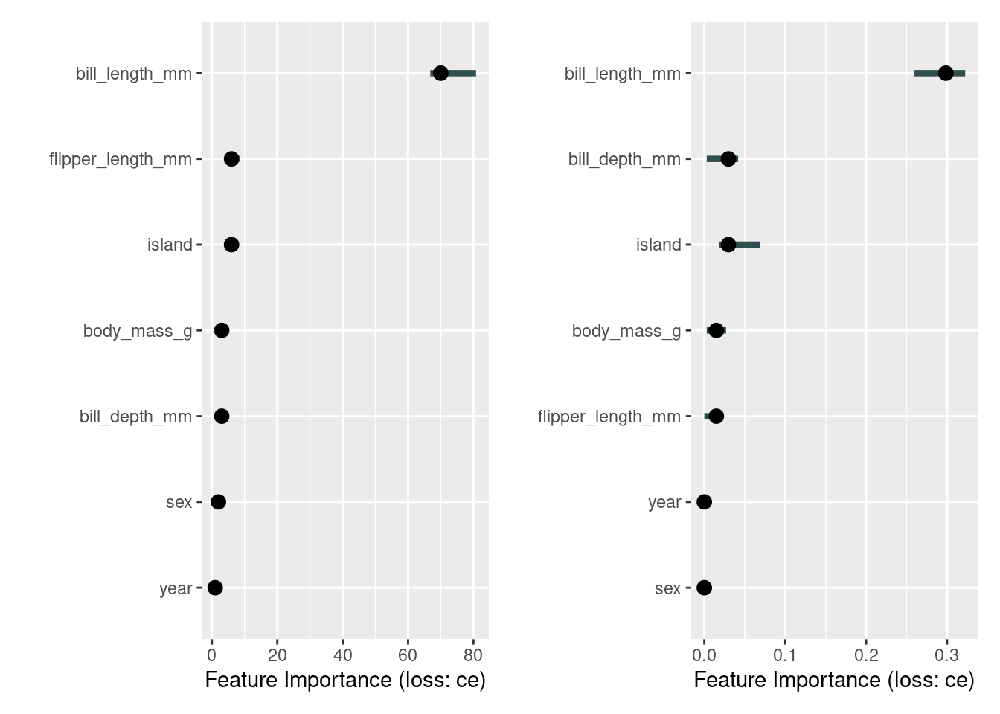
The results of the train set for FeatureImp are very similar, which is expected. We follow a similar approach to compare the feature effects:
model = Predictor$new(learner, data = penguins[train_set, ], y = "species")
effect = FeatureEffects$new(model)
plot(effect, features = num_features)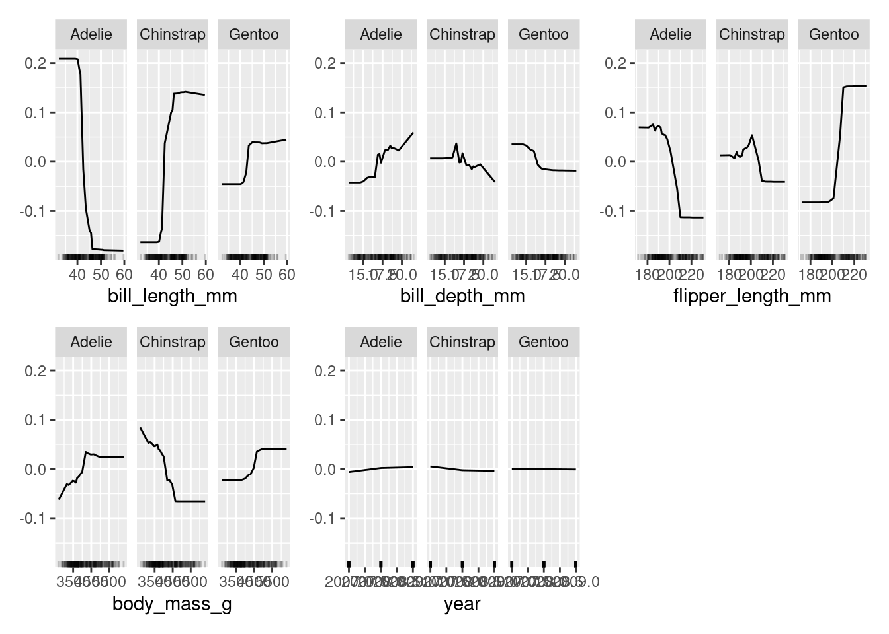
model = Predictor$new(learner, data = penguins[test_set, ], y = "species")
effect = FeatureEffects$new(model)
plot(effect, features = num_features)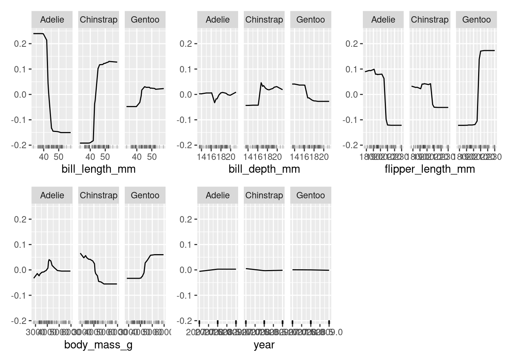
As is the case with FeatureImp, the test data results show either an over- or underestimate of feature importance / feature effects compared to the results where the entire penguin data set was used. This would be a good opportunity for the reader to attempt to resolve the estimation by playing with the amount of features and the amount of data used for both the test and train data sets of FeatureImp and FeatureEffects. Be sure to not change the line train_set = sample(task_peng$nrow, 0.8 * task_peng$nrow) as it will randomly sample the data again.
10.3 DALEX
The DALEX (Biecek 2018) package belongs to DrWhy family of solutions created to support the responsible development of machine learning models. It implements the most common methods for explaining predictive models using posthoc model agnostic techniques. You can use it for any model built with the mlr3 package as well as with other frameworks in R. The counterpart in Python is the library dalex (Baniecki et al. 2021).
The philosophy of working with DALEX package is based on the process of explanatory model analysis described in the EMA book (Biecek and Burzykowski 2021). In this chapter, we present code snippets and a general overview of this package. For illustrative purposes, we reuse the learner model built in the Section 10.1 on palmerpenguins::penguins data.
Once you become familiar with the philosophy of working with the DALEX package, you can also use other packages from this family such as fairmodels (Wiśniewski and Biecek 2022) for detection and mitigation of biases, modelStudio (Baniecki and Biecek 2019) for interactive model exploration, modelDown (Romaszko et al. 2019) for the automatic generation of IML model documentation in the form of a report, survex (Krzyziński et al. 2023) for the explanation of survival models, or treeshap for the analysis of tree-based models.
10.3.1 Explanatory model analysis
The analysis of a model is usually an interactive process starting with a shallow analysis – usually a single-number summary. Then in a series of subsequent steps, one can systematically deepen understanding of the model by exploring the importance of single variables or pairs of variables to an in-depth analysis of the relationship between selected variables to the model outcome. See Bücker et al. (2022) for a broader discussion of what the model exploration process looks like.
This explanatory model analysis (EMA) process can focus on a single observation, in which case we speak of local model analysis, or for a set of observations, in which case we speak of global data analysis. Below, we will present these two scenarios in separate subsections. See Figure 10.1 for an overview of key functions that will be discussed.
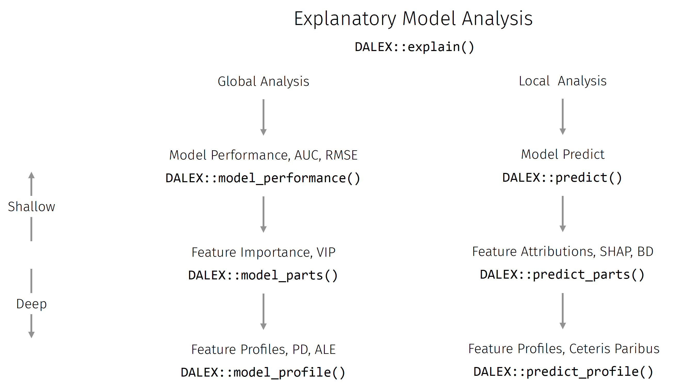
Predictive models in R have different internal structures. To be able to analyse them systematically, an intermediate object – a wrapper – is needed to provide a consistent interface for accessing the model. Working with explanations in the DALEX package always starts with the creation of such a wrapper with the use of the DALEX::explain() function. This function has several arguments that allow the model created by the various frameworks to be parameterised accordingly. For models created in the mlr3 package, it is more convenient to use the DALEXtra::explain_mlr3().
library("DALEX")
library("DALEXtra")
ranger_exp = DALEX::explain(learner,
data = penguins[test_set, ],
y = penguins[test_set, "species"],
label = "Ranger Penguins",
colorize = FALSE)Preparation of a new explainer is initiated
-> model label : Ranger Penguins
-> data : 67 rows 8 cols
-> data : tibble converted into a data.frame
-> target variable : Argument 'y' was a data frame. Converted to a vector. ( WARNING )
-> target variable : 67 values
-> predict function : yhat.LearnerClassif will be used ( default )
-> predicted values : No value for predict function target column. ( default )
-> model_info : package mlr3 , ver. 0.14.1 , task multiclass ( default )
-> predicted values : predict function returns multiple columns: 3 ( default )
-> residual function : difference between 1 and probability of true class ( default )
-> residuals : numerical, min = 0 , mean = 0.07756016 , max = 0.5380321
A new explainer has been created! The DALEX::explain() function performs a series of internal checks so the output is a bit verbose. Turn the verbose = FALSE argument to make it less wordy.
10.3.2 Global level exploration
The global model analysis aims to understand how a model behaves on average on a set of observations, most commonly a test set. In the DALEX package, functions for global analysis have names starting with the prefix model_.
10.3.2.1 Model Performance
As shown in Figure Figure 10.1, it starts by evaluating the performance of a model. This can be done with a variety of tools, in the DALEX package the default is to use the DALEX::model_performance function. Since the explain function checks what type of task is being analysed, it can select the appropriate performance measures for it. In our illustration, we have a multi-label classification, so measures such as micro-aggregated F1, macro-aggregated F1 etc. are calculated in the following snippet. One of the calculated measures is cross entropy and it will be used later in the following sections.
Each explanation can be drawn with the generic plot() function, for multi-label classification the distribution of residuals is drawn by default.
Measures for: multiclass
micro_F1 : 1
macro_F1 : 1
w_macro_F1 : 1
accuracy : 1
w_macro_auc: 1
cross_entro: 6.034954
Residuals:
0% 10% 20% 30% 40% 50%
0.0000000000 0.0005846154 0.0036863492 0.0111489133 0.0315985873 0.0440341048
60% 70% 80% 90% 100%
0.0535907937 0.0683762754 0.0956176783 0.2191798413 0.5380321429 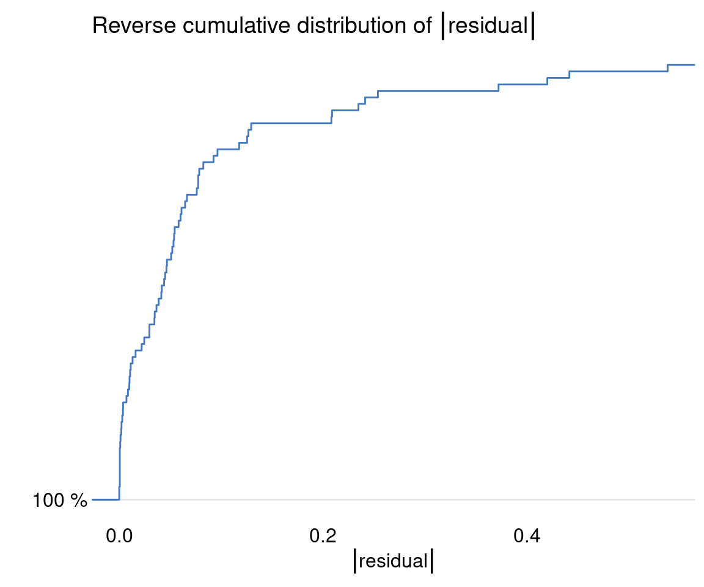
The task of classifying the penguin species is rather easy, which is why there are so many values of 1 in the performance assessment of this model.
10.3.2.2 Permutational Variable Importance
A popular technique for assessing variable importance in a model-agnostic manner is the permutation variable importance. It is based on the difference (or ratio) in the selected loss function after the selected variable or set of variables has been permuted. Read more about this technique in Variable-importance Measures chapter.
The DALEX::model_parts() function calculates the importance of variables and its results can be visualized with the generic plot() function.
variable mean_dropout_loss label
1 _full_model_ 6.034954 Ranger Penguins
2 year 5.988560 Ranger Penguins
3 species 6.034954 Ranger Penguins
4 sex 7.002289 Ranger Penguins
5 body_mass_g 12.377824 Ranger Penguins
6 bill_depth_mm 15.617252 Ranger Penguins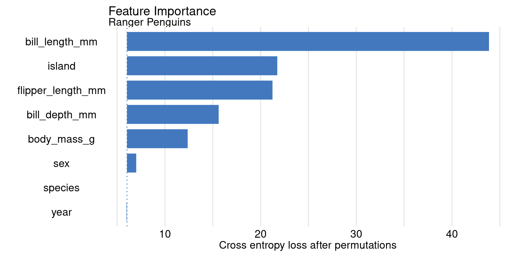
The bars start in loss (here cross-entropy loss) for the selected data and end in a loss for the data after the permutation of the selected variable. The more important the variable, the more the model will lose after its permutation.
10.3.2.3 Partial Dependence
Once we know which variables are most important, we can use Partial Dependence Plots to show how the model, on average, changes with changes in selected variables.
The DALEX::model_profile() function calculates the partial dependence profiles. The type argument of this function also allows Marginal profiles and Accumulated Local profiles to be calculated. Again, the result of the explanation can be model_profile with the generic function plot().
Top profiles :
_vname_ _label_ _x_ _yhat_ _ids_
1 bill_depth_mm Ranger Penguins.Adelie 13.500 0.2839077 0
2 bill_depth_mm Ranger Penguins.Chinstrap 13.500 0.1908264 0
3 bill_depth_mm Ranger Penguins.Gentoo 13.500 0.5252659 0
4 bill_depth_mm Ranger Penguins.Adelie 13.566 0.2839077 0
5 bill_depth_mm Ranger Penguins.Chinstrap 13.566 0.1908264 0
6 bill_depth_mm Ranger Penguins.Gentoo 13.566 0.5252659 0plot(ranger_profiles) +
theme(legend.position = "top") +
ggtitle("Partial Dependence for Penguins","")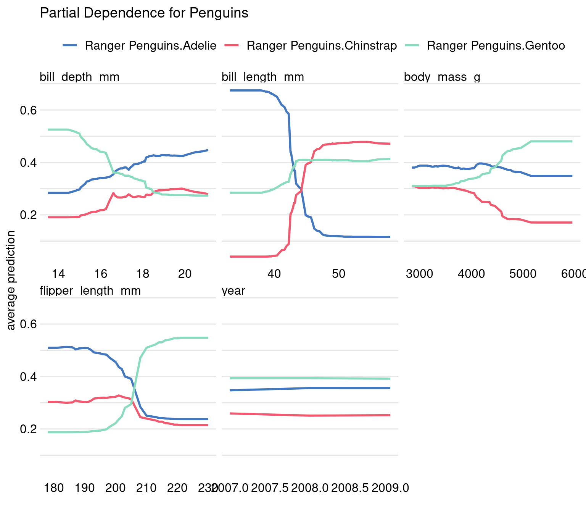
For the multi-label classification model, profiles are drawn for each class separately by indicating them with different colours. We already know which variable is the most important, so now we can read how the model result changes with the change of this variable. In our example, based on bill_length_mm we can separate Adelie from Chinstrap and based on flipper_length_mm we can separate Adelie from Gentoo.
10.3.3 Local level explanation
The local model analysis aims to understand how a model behaves for a single observation. In the DALEX package, functions for local analysis have names starting with the prefix predict_.
We will carry out the following examples using Steve the penguin of the Adelie species as an example.
# A tibble: 1 × 8
species island bill_length_mm bill_depth_mm flipper_l…¹ body_…² sex year
<fct> <fct> <dbl> <dbl> <int> <int> <fct> <int>
1 Adelie Torgersen 39.1 18.7 181 3750 male 2007
# … with abbreviated variable names ¹flipper_length_mm, ²body_mass_g10.3.3.1 Model Prediction
As shown in Figure Figure 10.1, the local analysis starts with the calculation of a model prediction.
For Steve, the species was correctly predicted as Adelie with high probability.
10.3.3.2 Break Down
A popular technique for assessing the contributions of variables to model prediction is Break Down (see Introduction to Break Down chapter for more information about this method).
The function DALEX::predict_parts() function calculates the attributions of variables and its results can be visualized with the generic plot() function.
ranger_attributions = predict_parts(ranger_exp, new_observation = steve)
plot(ranger_attributions) + ggtitle("Break Down for Steve") 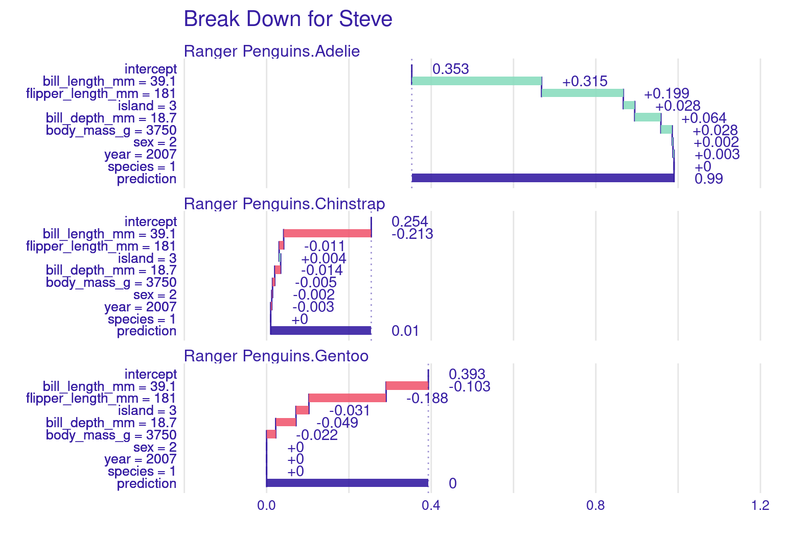
Looking at the plots above, we can read that the biggest contributors to the final prediction were for Steve the variables bill length and flipper.
10.3.3.3 Shapley Values
By far the most popular technique for local model exploration (Holzinger et al. 2022) is Shapley values and the most popular algorithm for estimating these values is the SHAP algorithm. Find a detailed description of the method and algorithm in the chapter SHapley Additive exPlanations (SHAP).
The function DALEX::predict_parts() calculates SHAP attributions, you just need to set type = "shap". Its results can be visualized with a generic plot() function.
ranger_shap = predict_parts(ranger_exp, new_observation = steve,
type = "shap")
plot(ranger_shap, show_boxplots = FALSE) +
ggtitle("Shapley values for Steve", "") 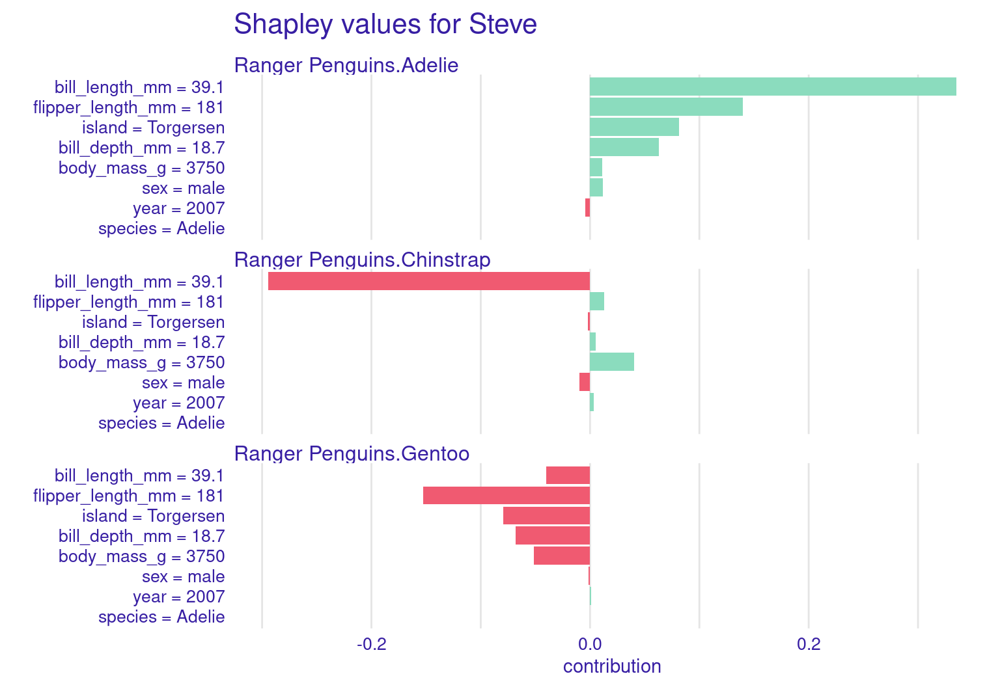
The results for Break Down and SHAP methods are generally similar. Differences will emerge if there are many complex interactions in the model.
10.3.3.4 Ceteris Paribus
In the previous section, we’ve introduced a global explanation – Partial Dependence plots. Ceteris Paribus plots are the local level version of that plot. Read more about this technique in the chapter Ceteris Paribus and note that these profiles are also called Individual Conditional Expectations (ICE). They show the response of a model when only one variable is changed while others stay unchanged.
The function DALEX::predict_profile() calculates Ceteris paribus profiles which can be visualized with the generic plot() function.
ranger_ceteris = predict_profile(ranger_exp, steve)
plot(ranger_ceteris) + ggtitle("Ceteris paribus for Steve", " ") 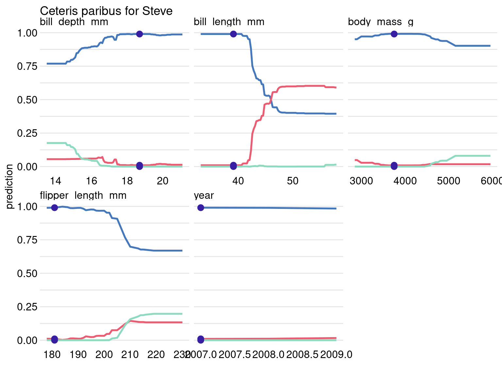
Blue dot stands for the prediction for Steve. Only a big change in bill length could convince the model of Steve’s different species.
10.4 Exercises
Model explanation allows us to confront our expert knowledge related to the problem with relations learned by the model. Following tasks are based on predictions of the value of football players based on data from the FIFA game. It is a graceful example, as most people have some intuition about how a footballer’s age or skill can affect their value. The latest FIFA statistics can be downloaded from kaggle.com, but also one can use the 2020 data avaliable in the DALEX packages(see DALEX::fifa dataset). The following exercises can be performed in both the iml and DALEX packages and we have provided solutions for both.
Prepare a
mlr3regression task forfifadata. Select only variables describing the age and skills of footballers. Train any predictive model for this task, e.g.regr.ranger.Use the permutation importance method to calculate variable importance ranking. Which variable is the most important? Is it surprising?
Use the Partial Dependence profile to draw the global behavior of the model for this variable. Is it aligned with your expectations?
4 Choose one of the football players. You can choose some well-known striker (e.g. Robert Lewandowski) or a well-known goalkeeper (e.g. Manuel Neuer). The following tasks are worth repeating for several different choices.
For the selected footballer, calculate and plot the Shapley values. Which variable is locally the most important and has the strongest influence on the valuation of the footballer?
For the selected footballer, calculate the Ceteris Paribus / Individual Conditional Expectatons profiles to draw the local behaviour of the model for this variable. Is it different from the global behaviour?